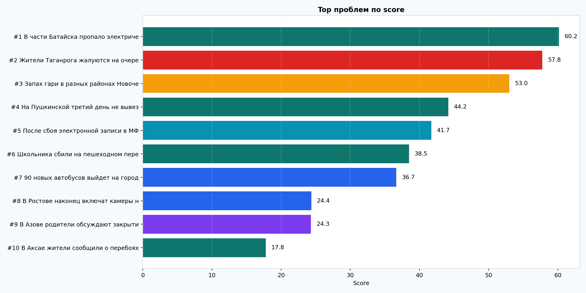
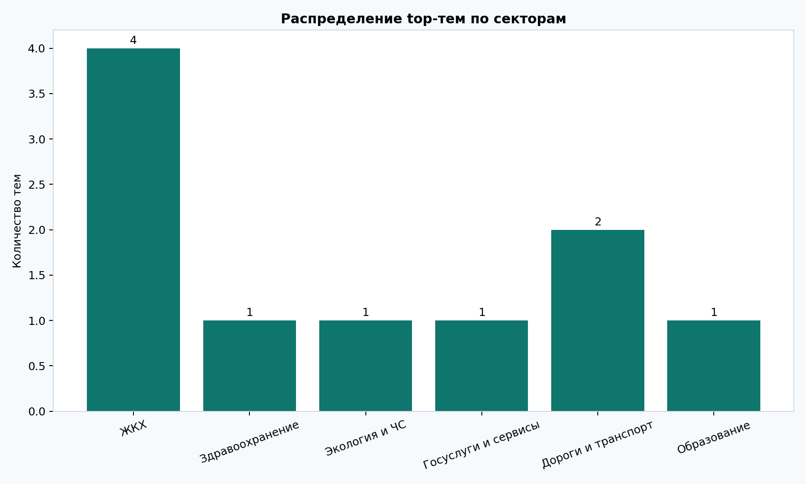
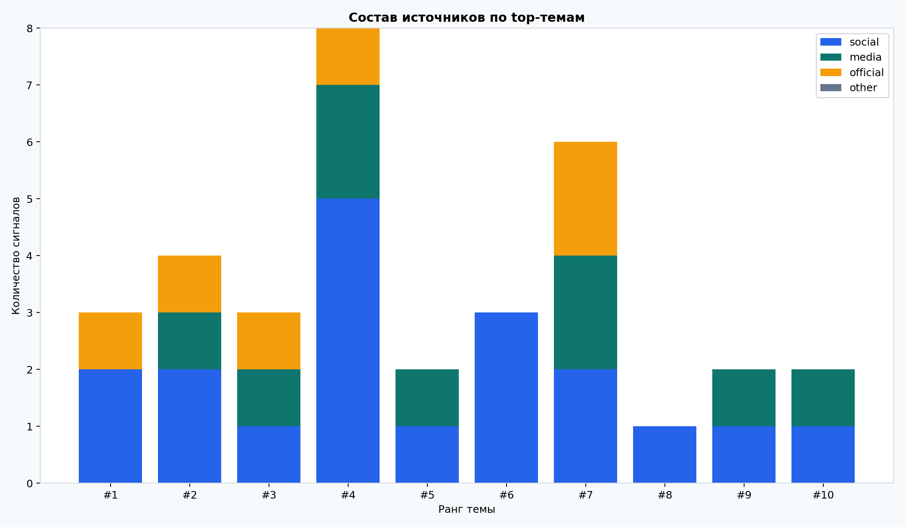
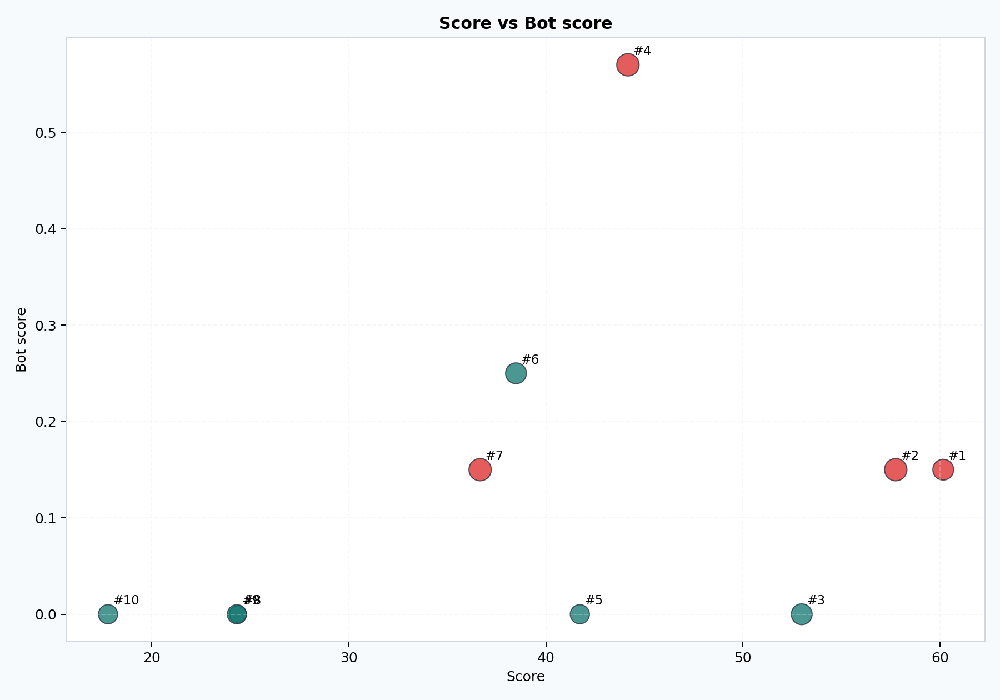
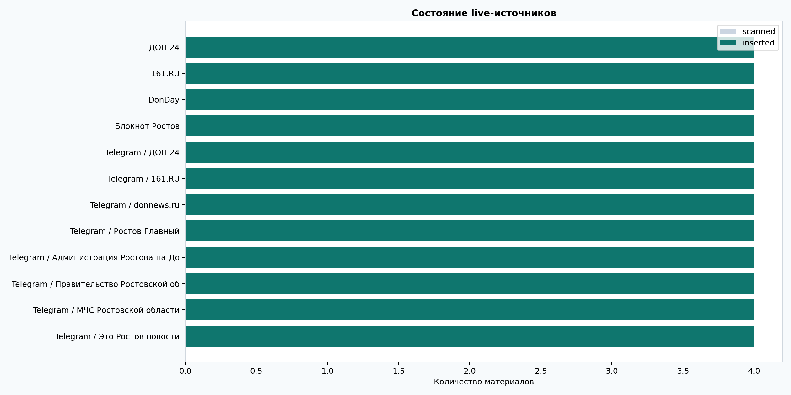

Регион: Ростовская область
Сгенерировано: 2026-04-03T23:34:26.084891+03:00
Карточек: 14 · Тем в top issues: 14 · Источников в отчёте: 14
Это визуальная ручная проверка. Здесь можно быстро увидеть, что аналитика реально работает: как ранжируются темы, как распределяются сектора, где есть риск аномалий и как отработали источники.
Как читать: сначала посмотрите Top проблем по score, потом Source mix, потом Score vs Bot score, а ниже уже откройте карточки первых тем.





Сектор: ЖКХ
Статус: mixed_signal
Муниципалитеты: Батайск
За период с 02.04 18:15 по 02.04 19:35 по теме «В части Батайска пропало электричество» зафиксировано 3 сообщений из 3 источников. География: Батайск. Основные факты: После официального сообщения жители Батайска продолжают писать, что часть домов ещё остаётся без света и напряжение не стабилизир… По данным региональных служб, электроснабжение в Батайске восстановлено после локального технологического сбоя. Работы завершены… Есть официальные сообщения. Отмечено расхождение между официальной версией и сообщениями пользователей.
Почему сейчас: есть всплеск сообщений за последние 24 часа; тема подтверждается несколькими независимыми источниками; по теме есть официальный сигнал; есть расхождение между официальным обновлением и пользовательскими сообщениями
Сектор: Здравоохранение
Статус: mixed_signal
Муниципалитеты: Таганрог
За период с 30.03 08:10 по 30.03 12:05 по теме «Жители Таганрога жалуются на очереди в поликлинике №2» зафиксировано 4 сообщений из 4 источников. География: Таганрог. Основные факты: После официального сообщения жители продолжают писать, что очередь в поликлинике №2 Таганрога сохраняется, хотя движение стало бы… Минздрав Ростовской области сообщил об открытии дополнительных окон регистратуры и перераспределении потоков пациентов в поликлин… Есть официальные сообщения. Отмечено расхождение между официальной версией и сообщениями пользователей.
Почему сейчас: есть всплеск сообщений за последние 24 часа; тема подтверждается несколькими независимыми источниками; по теме есть официальный сигнал; есть расхождение между официальным обновлением и пользовательскими сообщениями
Сектор: Экология и ЧС
Статус: official_response
Муниципалитеты: Новочеркасск
За период с 31.03 07:40 по 31.03 09:25 по теме «Запах гари в разных районах Новочеркасска» зафиксировано 3 сообщений из 3 источников. География: Новочеркасск. Основные факты: МЧС по Ростовской области сообщило о проверке информации о запахе гари в Новочеркасске и уточнило, что данные замеров будут опубл… В пабликах Новочеркасска сообщают о запахе гари и дымке. Отдельные сообщения пришли из районов рядом с промышленной зоной. Есть официальные сообщения.
Почему сейчас: есть всплеск сообщений за последние 24 часа; тема подтверждается несколькими независимыми источниками; по теме есть официальный сигнал